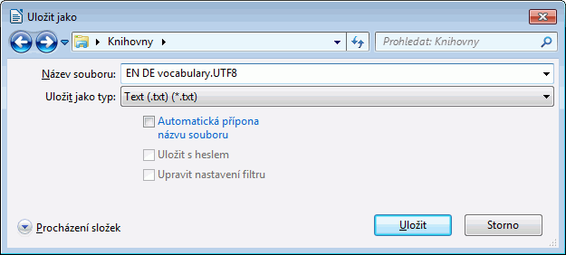
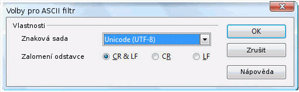

Glosáře / Vlastní slovníky
Glosáře představují takové soubory, které jsou pro použití v OmegaT tvořené a aktualizované ručně.
Pokud projekt OmegaT obsahuje jeden či více glosářů, tak program automaticky zobrazí v okně Glosář všechny termíny nalezené v aktivním segmentu.
Použití
Dostupný glosář začněte používat tak, že jej po vytvoření projektu jednoduše umístíte do adresáře /glossary. Když je projekt otevřený, OmegaT v tomto adresáři soubory glosáře automaticky detekuje. Výrazy aktivního segmentu, které OmegaT najde v souboru (souborech) glosáře, se zobrazují v okně Glosář:

Slovo před znakem rovnítka (=) je termín zdrojového jazyka a jeho překlad (překlady) jsou za rovnítkem. K záznamu v glosáři můžete přidat komentář (např. „noun“ u druhé položky). Funkce glosáře nalezne jen takové výrazy, pokud se záznam v glosáři přesně shoduje se slovem v překládaném textu (např. nenalezne skloňované tvary atd.). Nové záznamy mohou být přidané do souboru / souborů glosáře v průběhu překladu manuálně (např. v textovém editoru), ale nově vložené pojmy budou rozpoznané až po novém načtení projektu.
Formát souboru
Soubory glosáře představují jednoduché soubory v prostém textu a obsahují tři tabulátorem oddělené sloupce, ve kterých se nachází zdrojový (první sloupec) a cílový (druhý sloupec) výraz. Třetí sloupec může být použit pro dodatečné informace. Soubory glosáře mohou být buď ve výchozím kódování systému (a mít koncovku .tab) nebo v kódování UTF-8 (s koncovkou .utf8). Právě kvůli své univerzálnosti se upřednostňuje kódování Unicode (UTF-8).
Jak glosáře vytvořit
Při dodržení následující metody není vytváření glosáře nikterak složité. Využijete k tomu OpenOffice.org Writer - pokud tento program dosud nemáte, tak si jej můžete stáhnout a nainstalovat balík OpenOffice.org. Spusťte OpenOffice.org a otevřete nový textový dokument nebo spusťte „OpenOffice.org Writer“.
Do prázdného dokumentu vložte záznamy pro glosář: termín ze zdrojového jazyka, tabulátor, termín z cílového jazyka, tabulátor, komentář či bližší vysvětlení pro položku, na závěr Enter. Klávesa tabulátoru se nachází v levé části klávesnice. Pokud nechcete přidávat žádné komentáře, nemusíte druhý tabulátor vkládat. „Termínem“ se rozumí jak jednotlivé slovo, tak i celá fráze. Na druhý řádek vložte druhý termín a jeho překlad.
Když jste dokončili vkládání termínů, budete mít dva „sloupce“ termínů: ve zdrojovém jazyce vlevo a jejich překlad v cílovém jazyce vpravo, a možná i třetí sloupec obsahující komentáře a vysvětlivky. Zobrazení symbolů pro tabulátor (v našem příkladě →) a Enter (¶) můžete zapnout kliknutím na ikonu ¶ v programu Writer na panelu Standarní. Zde je pro ukázku česko-německý glosář:
slovo→Wort→das (-/e/s, Wörter/-e)¶
domek→Häuschen→das, (pl Häuschen)¶
pes→Hund→m, f Hündin¶
kůň→Pferd→n, m Hengst f Stute n Fohlen¶
NEPOUŽÍVEJTE v programu OpenOffice.org funkci „sloupce“ k vytvoření sloupců glosáře: pouze oddělte každý zdrojový termín a jeho překlad jedním tabulátorem.
Když jste dokončili vkládání záznamů do glosáře, vyberte Soubor > Uložit jako. V okně „Umístění souboru“ vložte jméno souboru glosáře, s koncovkou „.utf8“ (např. „MujSlovnik.utf8“). U „Typu souboru“ označte „Text (.txt.)“. Zrušte zaškrtnutí políčka „Automatická přípona názvu souboru“ a aktivujte „Upravit nastavení filtru“:

Potvrďte stiskem OK. Zobrazí se dialogové okno nabízející dvě možnosti:„Zachovat stávající formát“ a „Uložit ve formátu ODF“. Vyberte „Zachovat stávající formát“ pro uložení souboru v textovém formátu. V dialogovém okně Volby pro ASCII filtr (vizte níže), vyberte kódování „Unicode (UTF-8)“:

Potvrďte tlačítkem OK.
Po založení projektu OmegaT, zkopírujte nebo přesuňte tento soubor do adresáře projektu \glossary. Pokud máte projekt již otevřen, tak po zkopírování souboru glosáře nechte projekt znovu načíst. V souboru glosáře můžete provádět změny i během práce na projektu. Program OmegaT kontroluje glosáře přibližně každou sekundu a změny se průběžně projeví, takže po úpravách a uložení souboru glosáře již není nutno znovu načítat celý projekt.
Když je otevřený segment se zdrojovým textem, tak se v okně Glosář zobrazí jen ty záznamy pro vybrané položky ve zdrojovém segmentu, které se již nachází ve vašem glosáři (nebo ve více glosářích - můžete jich současně používat více, zároveň mohou být uloženy v různých podadresářích adresáře glossary).
Použití Trados Multiterm
Glosáře vytvořené pomocí funkce textového exportu Trados Multiterm mohou být používány přímo bez další změny, s podmínkou, že se opatří příponou .tab a pole zdrojového (první sloupec) a cílového (druhý sloupec) pojmu představují první dvě pole. Když exportujete data použitím možnosti „Tab-delimited export“, budete muset smazat prvních 5 sloupců (Seq. Nr, Date created atd.) ještě před těmi dvěma položkami, která jsou pro nás podstatné.
Obecné problémy s glosářem
- Problém: Nezobrazují se žádné termíny z glosáře.
- Možné příčiny:
- v adresáři „/glossary“ není umístěn žádný glosář
- soubor glosáře je prázdný
- položky glosáře nejsou od sebe odděleny tabulátorem
- soubor glosáře nemá správnou koncovku (.tab nebo .utf8)
- není nalezena PŘESNÁ shoda mezi záznamem v glosáři a zdrojovým textem ve vašem dokumentu - například když je daná položka v množném čísle
- soubor glosáře nemá správné kódování
- v aktivním segmentu nejsou žádné termíny, které se kryjí s termíny v glosáři
- jeden nebo více z nahoře zmíněných problémů byl vyřešen, ale projekt nebyl nově načten.
- Problém: V okně Glosáře se některé znaky nezobrazují správně (ale stejné znaky v okně Editoru jsou zobrazeny správě).
- Možné příčiny:
- koncovka a kódování souboru se liší